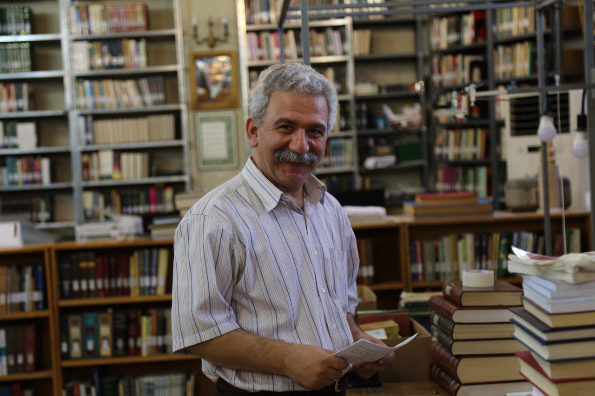

Masoud Khorsand

Summary
I'm an Iranian in my 60s and love to learn coding.
Education
- High school Diploma from Tehran Don Bosco Callege (Andisheh) (1979)
Work Experince
- Librarian at Saleh Library (2009-2023)
- Journalist at Farsi Magazine (2007-2009)
- Content Manager at Tasvirsazan Hamahang advertising company (2000-2007)
- Journalist at Payam-Emrooz Magazine (1993-2000)
- Journalist at Jameh-Salem Magazine (1990-1993)
- freelance translator and teacher (1980-1990)
Skills
- Microsoft office Word, excel, access
- All aspects of running a Library
- Supervise and manage content team
- Writing and editing articles
- Publishing magazines, books, etc.